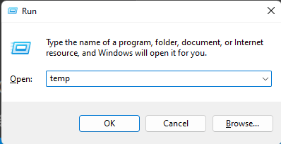
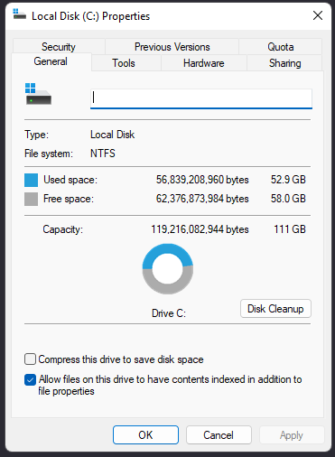

1.Open run press windows key + R.
2.Type temp and press enter or click ok.

3. If you typed it in correctly a folder should open.
4.press ctrl + a it should select all files in the folder.
5.Lets delete those files by pressing shift + delete a dialog box should appear and say (Are you sure you want to permanently delete these ___ items?) click yes and should start to delete the files if you get messages saying (The action can’t be completed because another program) check the box that says (Do this for current items) and then click skip.
6.open run by pressing windows key + R
7. Type %temp% and press enter or click ok
8. If you typed it in correctly a folder should open.
9. Press ctrl + a it should select all files in the folder.
10. Lets delete those files by pressing shift + delete a dialog box should appear and say (Are you sure you want to permanently delete these ___ items?) click yes and should start to delete the files if you get messages saying (The action can’t be completed because another program)
Check the box that says (Do this for current items) and then click skip.
11.Type prefetch and press enter or click ok
12. If you typed it in correctly a folder should open.
13. Press ctrl + a it should select all files in the folder.
14. Lets delete those files by pressing shift + delete a dialog box should appear and say (Are you sure you want to permanently delete these ___ items? ) click yes and should start to delete the files if you get messages saying (the action can’t be completed because another program)
Check the box that says (Do this for current items) and then click skip.
repeat these steps above for 2 other folders called prefetch and %temp%
15.open file explorer press windows key + E
16.click on This pc
17.right click on the hard drive that windows is installed and then click properties

18.select disk cleanup